คีมและอุปกรณ์จับยึดทุกแบบที่ช่างใช้จริง ตั้งแต่คีมมินิ 5 นิ้วสำหรับงานละเอียด ไปจนถึงประแจจับท่อ 900 มม. และปากกาจับชิ้นงาน 8 นิ้ว ทุกตัวมีรหัสสินค้า ขนาด จำนวนต่อลัง และเกรดเหล็กระบุชัด
วัสดุ: SK-55 เหล็กกล้าคาร์บอนสูง
| รูป | รหัส | ชื่อสินค้า | ขนาด | จำนวน/ลัง | วัสดุ |
|---|---|---|---|---|---|
| WNS105C | คีมมินิปากจิ้งจกMini Pliers | 125mm | 12/240 | ||
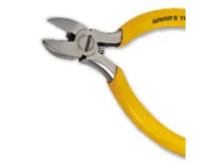 |
WNS105A | คีมตัดปากเฉียงมินิMini Diagonal Cutting Pliers | 125mm | 12/240 | |
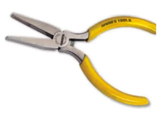 |
WNS105F | คีมมินิปากแบนFlat-Nose Pliers | 125mm | 12/240 | |
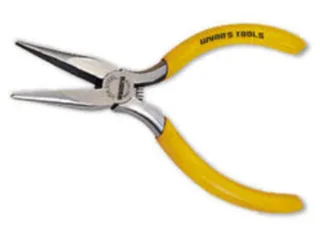 |
WNS105B | คีมมินิปากแหลมไม่มีฟันPointed-Nose Pliers Without Tooth | 125mm | 12/240 | |
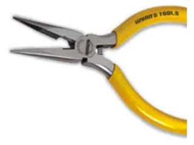 |
WNS105N | คีมมินิปากแหลมมีฟันMini Long Nose Pliers | 125mm | 12/240 | |
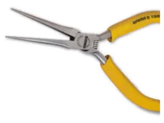 |
WNS105M | คีมมินิปากเข็มMini Needle Nose Pliers | 125mm | 12/240 | |
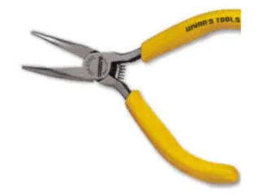 |
WNS105G | คีมมินิปากแหลมปลายงอMini Bent-Nose Pliers | 125mm | 12/240 | |
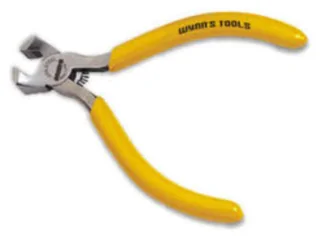 |
WNS105K | คีมมินิปากนกแก้วMini End Cutting Pliers | 125mm | 12/240 |
วัสดุ: C-ALLOY เหล็กผสมชุบนิกเกิล-เหล็ก
| รูป | รหัส | ชื่อสินค้า | ขนาด | จำนวน/ลัง | วัสดุ |
|---|---|---|---|---|---|
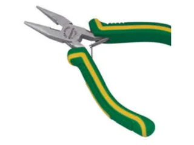 |
S105A | คีมมินิปากแหลมด้ามหุ้มMini Long Nose Pliers | 125mm | 12/240 | |
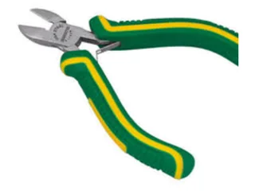 |
S105B | คีมตัดปากเฉียงมินิด้ามหุ้มMini Diagonal Cutting Pliers | 125mm | 12/240 | |
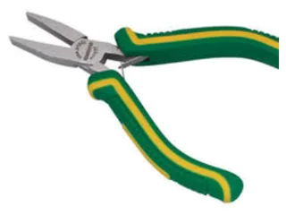 |
S105C | คีมมินิปากแบนด้ามหุ้มMini Flat Nose Pliers | 125mm | 12/240 | |
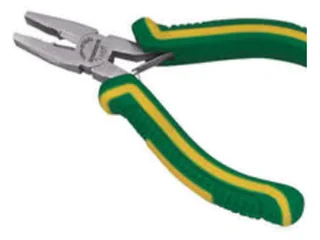 |
S105F | คีมปากจิ้งจกด้ามหุ้ม (ปากรวม)Mini Pliers | 125mm | 12/240 | |
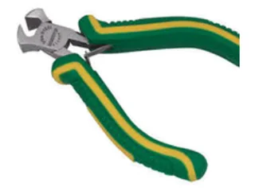 |
S105G | คีมมินิปากนกแก้วด้ามหุ้มMini End Cutting Pliers | 125mm | 12/240 | |
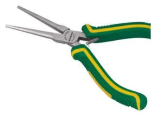 |
S105H | คีมมินิปากเข็มด้ามหุ้มMini Needle Nose Pliers | 125mm | 12/240 | |
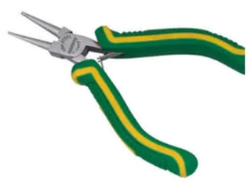 |
S105N | คีมมินิปากแหลม แกนกลมMini Round Nose Pliers | 125mm | 12/240 |
วัสดุ: CR-V Chromium-Vanadium / SK-55
| รูป | รหัส | ชื่อสินค้า | ขนาด | จำนวน/ลัง | วัสดุ |
|---|---|---|---|---|---|
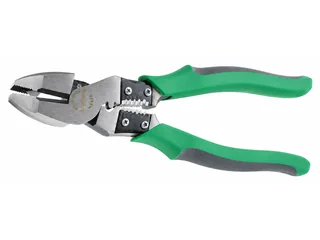 |
W3455 | คีมจับปากรวม ตัด ปอกและย้ำสายไฟMulti-Functional Combination Pliers ปากตัดความแข็งระดับ HRC58-63 · ตัดลวดสลิง 3 มม. · ตัดสายไฟ 0.5 มม. · ย้ำสายไฟด้วยขนาดเล็กได้ |
250mm | 6/60 | CR-V |
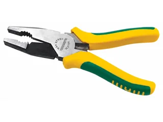 |
W3144 | คีมปากรวมMulti-Functional Combination Pliers | 200mm | 6/60 | CR-V |
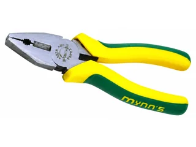 |
AC208 | คีมปากรวม ทรงยุโรปEuropean Type Combination Pliers ทุกเบอร์ในตระกูลนี้หน้าตาเหมือนกัน ต่างที่ขนาด — ดูขนาดจริงที่คอลัมน์ขนาด |
200mm | 6/60 | SK-55 |
| AC406 | 150mm | 6/60 | SK-55 | ||
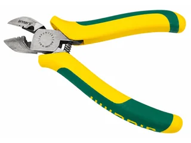 |
WN218N | คีมตัดปากเฉียง ปอกสายไฟได้Japan E-Type Diagonal Cutting Pliers | 150mm | 6/120 | CR-V |
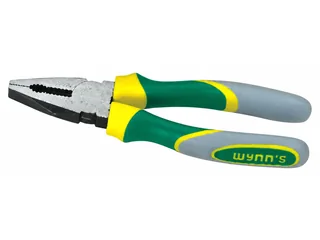 |
W00100 | คีมปากรวม ด้ามจับ 3 สีCombination Pliers with Tri-Color Handle | 150mm | 12/96 | CR-V |
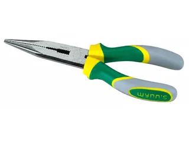 |
W00200 | คีมปากยาว ด้ามจับ 3 สีLong Nose Pliers with Tri-Color Handle | 150mm | 12/96 | CR-V |
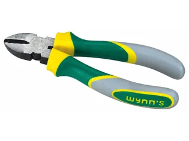 |
W00300 | คีมปากตัด ด้ามจับ 3 สีDiagonal Cutting Pliers with Tri-Color Handle | 150mm | 12/96 | CR-V |
วัสดุ: CR-V / SK-55
| รูป | รหัส | ชื่อสินค้า | ขนาด | จำนวน/ลัง | วัสดุ |
|---|---|---|---|---|---|
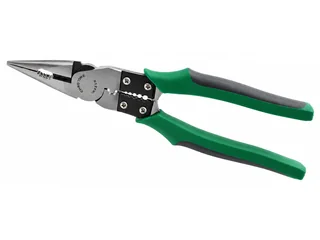 |
W3456 | คีมปากแหลม จับ ตัด ปอกและย้ำสายไฟMulti Function Long Nose Pliers ปากตัดแข็งระดับ HRC59-63 ตัดสายทองแดงได้ · ผ่อนแรงกว่าคีมปกติ 30% |
230mm | 6/60 | CR-V |
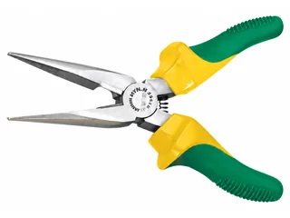 |
W508P | คีมปากแหลม มีปากตัดAmerican Type Long Nose Pliers ทุกเบอร์ในตระกูลนี้หน้าตาเหมือนกัน ต่างที่ขนาด — ดูขนาดจริงที่คอลัมน์ขนาด |
200mm | 6/60 | SK-55 |
| W106P | 150mm | 6/60 | SK-55 | ||
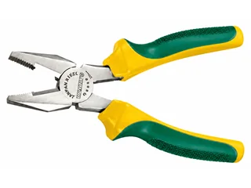 |
W208P | คีมปากจระเข้American Type Combination Pliers ทุกเบอร์ในตระกูลนี้หน้าตาเหมือนกัน ต่างที่ขนาด — ดูขนาดจริงที่คอลัมน์ขนาด |
200mm | 6/60 | SK-55 |
| W406P | 150mm | 6/60 | SK-55 | ||
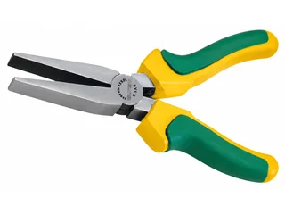 |
W106 | คีมปากแบน แบบไม่มีฟันFlat Nose Pliers | 150mm | 6/120 | SK-55 |
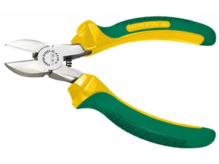 |
W608P | คีมตัดปากเฉียงAmerican Type Diagonal Cutting Pliers ทุกเบอร์ในตระกูลนี้หน้าตาเหมือนกัน ต่างที่ขนาด — ดูขนาดจริงที่คอลัมน์ขนาด |
200mm | 6/60 | SK-55 |
| W306P | 150mm | 6/60 | SK-55 | ||
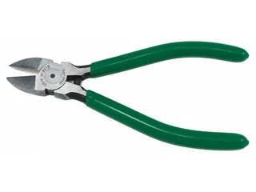 |
WNS105D | คีมตัดปากเฉียงสไตล์อเมริกันAmerican Type Side Cutting Pliers ทุกเบอร์ในตระกูลนี้หน้าตาเหมือนกัน ต่างที่ขนาด — ดูขนาดจริงที่คอลัมน์ขนาด ความแข็ง HRC52-58 ตัดลวด 0.8–1 มม. เหมาะงานไฟฟ้า ปอกสายไฟ ตัดเส้นลวด ตัดพลาสติก |
125mm | 12/240 | SK-55 |
| WNS106D | 150mm | 20/160 | SK-55 | ||
| WS175B | 175mm | 12/72 | SK-55 | ||
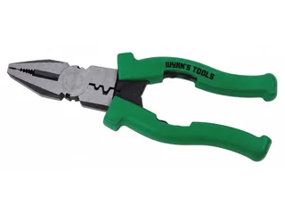 |
WB208 | คีมปากจระเข้ จับ ตัด ปอกและย้ำสายไฟMulti-Purpose Combination Pliers มีปากย้ำสายไฟ 2 ขนาด ปอกสายไฟได้หลายขนาด |
200mm | 6/60 | SK-55 |
วัสดุ: SK-55 / CR-V / เหล็กอัลลอย
| รูป | รหัส | ชื่อสินค้า | ขนาด | จำนวน/ลัง | วัสดุ |
|---|---|---|---|---|---|
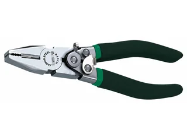 |
W208K | คีมปากจระเข้พาวเวอร์สปริงEnergy Saving Combination Pliers | 200mm | 6/60 | CR-V |
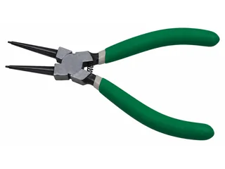 |
WHS175B | คีมหนีบแหวนปากตรงInternal Circlip Pliers Straight ทุกเบอร์ในตระกูลนี้หน้าตาเหมือนกัน ต่างที่ขนาด — ดูขนาดจริงที่คอลัมน์ขนาด |
175mm | 6/120 | SK-55 |
| WHS330B | 330mm | 6/36 | SK-55 | ||
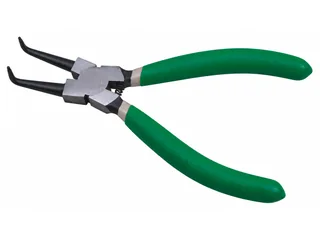 |
WHB175B | คีมหนีบแหวนปากงอInternal Circlip Plier Bent Nose ทุกเบอร์ในตระกูลนี้หน้าตาเหมือนกัน ต่างที่ขนาด — ดูขนาดจริงที่คอลัมน์ขนาด |
175mm | 6/120 | SK-55 |
| WHB330B | 330mm | 6/36 | SK-55 | ||
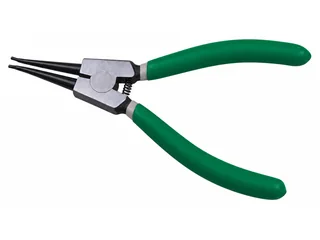 |
WSS175B | คีมถ่างแหวนปากตรงExternal Circlip Pliers Straight ทุกเบอร์ในตระกูลนี้หน้าตาเหมือนกัน ต่างที่ขนาด — ดูขนาดจริงที่คอลัมน์ขนาด |
175mm | 6/120 | SK-55 |
| WSS330B | 330mm | 6/36 | SK-55 | ||
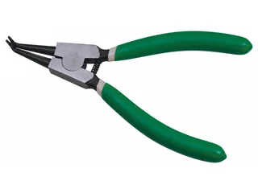 |
WSB175B | คีมถ่างแหวนปากงอExternal Circlip Pliers Bent Nose ทุกเบอร์ในตระกูลนี้หน้าตาเหมือนกัน ต่างที่ขนาด — ดูขนาดจริงที่คอลัมน์ขนาด |
175mm | 6/120 | SK-55 |
| WSB330B | 330mm | 6/36 | SK-55 | ||
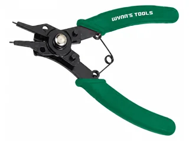 |
WNS001 | คีมถ่างและหนีบแหวนชุด 4in14-in-1 Circlip Pliers มีปาก 4 แบบให้เลือกใช้ 45° / 90° / 180° (แคตตาล็อกพิมพ์รหัสเป็น WNS01 — ไฟล์รูปทางการใช้ WNS001) |
175mm | 6/60 | SK-55 |
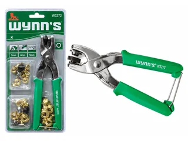 |
W3272 | ชุดคีมเจาะตาไก่ ย้ำตาไก่ ปรับขนาดได้Multi-Function Grommet Setting Pliers เปลี่ยนหัวย้ำได้ 3 ขนาด ในชุดมีแถมตาไก่ขนาดละ 10 ชิ้น ใช้กับหนัง ยาง กระดาษ พลาสติก |
7mm, 8mm, 12mm | 6/24 | เหล็กอัลลอย |
วัสดุ: เหล็กอัลลอย / #65MN / CR-V
| รูป | รหัส | ชื่อสินค้า | ขนาด | จำนวน/ลัง | วัสดุ |
|---|---|---|---|---|---|
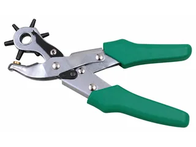 |
W0378 | คีมเจาะรูDrilling Pliers เจาะรูหนัง เข็มขัด กระดาษ การ์ดบอร์ด พีวีซี |
2.5, 3.0, 3.5, 4.0, 4.5, 5.0mm | 6/24 | เหล็กอัลลอย |
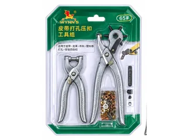 |
W0555 | ชุดคีมเจาะรูหนัง กดกระดุม คีมย้ำตาไก่Belt Puncher and Button Pressure Tool Kits | 2.5, 3, 3.5, 4, 4.5, 5mm | 10/20 | #65MN เหล็กแมงกานีส |
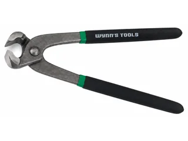 |
W0089A | คีมปากนกแก้วผูกลวดTowers Pincers เหมาะสำหรับงานก่อสร้างและงานตกแต่ง |
200mm | 10/60 | CR-V |
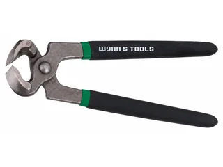 |
W0087A | คีมถอนตะปูCarpenters Pincers ด้ามจับหุ้มสองชั้น เหมาะงานไม้ งานทำรองเท้า |
200mm | 10/60 | CR-V |
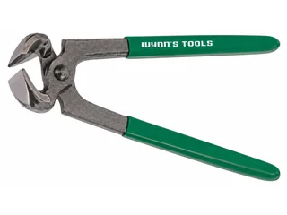 |
W0088A | คีมถอนตะปู ด้ามยางนุ่มCarpenters Pincers | 200mm | 10/60 | CR-V |
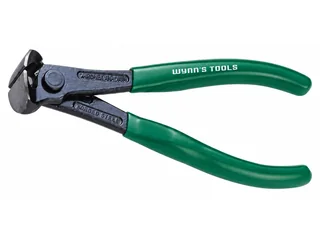 |
W0144 | คีมตัดเหล็ก ตัดหัวตะปูGerman Type End Cutting Pliers ปากตัดชุบแข็ง คงทน ไม่บิ่นหรือกร่อน คีมรมดำป้องกันสนิม |
150mm | 15/120 | CR-V |
วัสดุ: SK-55 / HT-250
| รูป | รหัส | ชื่อสินค้า | ขนาด | จำนวน/ลัง | วัสดุ |
|---|---|---|---|---|---|
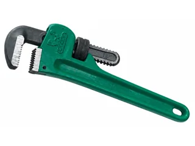 |
W450C | ประแจจับท่อขาเดียว รุ่นงานหนัก สีเขียวHeavy Duty Pipe Wrench ทุกเบอร์ในตระกูลนี้หน้าตาเหมือนกัน ต่างที่ขนาด — ดูขนาดจริงที่คอลัมน์ขนาด |
450mm | 4/12 | SK-55 |
| W600C | 600mm | 2/10 | SK-55 | ||
| W900C | 900mm | 1/4 | SK-55 | ||
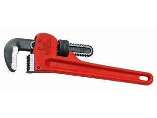 |
W450B | ประแจจับท่อขาเดียว รุ่นงานหนัก สีแดงHeavy Duty Pipe Wrench ทุกเบอร์ในตระกูลนี้หน้าตาเหมือนกัน ต่างที่ขนาด — ดูขนาดจริงที่คอลัมน์ขนาด |
450mm | 4/12 | SK-55 |
| W600B | 600mm | 2/10 | SK-55 | ||
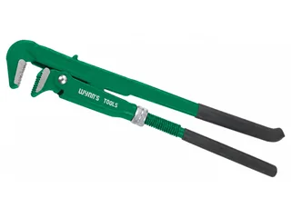 |
W0133 | ประแจจับท่อ ขาคู่Bent Nose Pipe Wrench 90° ทุกเบอร์ในตระกูลนี้หน้าตาเหมือนกัน ต่างที่ขนาด — ดูขนาดจริงที่คอลัมน์ขนาด |
1" | 36 | SK-55 |
| W0134 | 1.5" | 24 | SK-55 | ||
| W0135 | 2" | 12 | SK-55 | ||
| W0136 | 3" | 6 | SK-55 | ||
| W0137 | 4" | 6 | SK-55 | ||
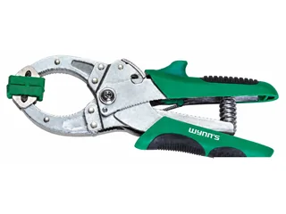 |
W0559 | แคลมป์แบบคีมสปริงคู่ (2 ชิ้น)2pcs Ratchet Type Clamps เหมาะงานเชื่อมต่อ เชื่อมโลหะ และการประกอบ |
อ้าได้ 50mm / 70mm | 6/24 | SK-55 |
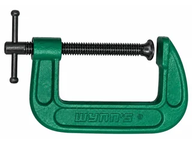 |
W0473A | ซีแคลมป์Heavy G-Shape Clamp ทุกเบอร์ในตระกูลนี้หน้าตาเหมือนกัน ต่างที่ขนาด — ดูขนาดจริงที่คอลัมน์ขนาด |
1" | 12/144 | SK-55 |
| W0473B | 2" | 12/72 | SK-55 | ||
| W0473C | 3" | 6/36 | SK-55 | ||
| W0473D | 4" | 6/36 | SK-55 | ||
| W0473E | 5" | 6/30 | SK-55 | ||
| W0473F | 6" | 6/24 | SK-55 | ||
| W0473G | 8" | 6/12 | SK-55 | ||
| W0473H | 10" | 5/10 | SK-55 | ||
| W0473I | 12" | 5/10 | SK-55 | ||
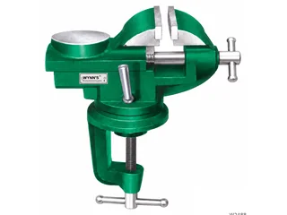 |
W2488 | ปากกาจับชิ้นงาน แบบยึดติดโต๊ะDovetail Type Parallel Bench Vise | 50mm | 10 | HT-250 |
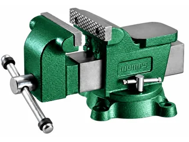 |
W2484 | ปากกาจับชิ้นงาน รุ่นงานหนักHeavy Duty M Type Precision Hinged Pipe Vise ทุกเบอร์ในตระกูลนี้หน้าตาเหมือนกัน ต่างที่ขนาด — ดูขนาดจริงที่คอลัมน์ขนาด ฐานหมุนได้ 360° จับวัสดุทรงกลม Ø13.5-36 |
4" (ปาก 100mm · อ้า 75mm · คอลึก 56mm · ทั่ง 65X65mm) | 2 | HT-250 |
| W2486 | จับวัสดุทรงกลม Ø13.5-56 |
6" (ปาก 150mm · อ้า 125mm · คอลึก 75mm · ทั่ง 115X115mm) | 1 | HT-250 | |
| W2487 | จับวัสดุทรงกลม Ø13.5-68 |
8" (ปาก 200mm · อ้า 150mm · คอลึก 86mm · ทั่ง 140X140mm) | 1 | HT-250 | |
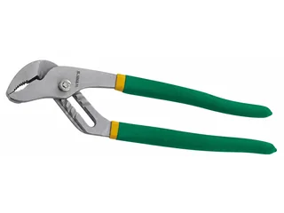 |
WNS508A | คีมคอม้า ชุบนิกเกิลWater Pump Pliers Nickel Alloy Plated ทุกเบอร์ในตระกูลนี้หน้าตาเหมือนกัน ต่างที่ขนาด — ดูขนาดจริงที่คอลัมน์ขนาด |
200mm | 10/60 | SK-55 |
| WNS5010A | 250mm | 6/60 | SK-55 | ||
| WNS5012A | 300mm | 6/36 | SK-55 |
วัสดุ: SK-55 / C-ALLOY / เหล็กอัลลอย / CR-V
| รูป | รหัส | ชื่อสินค้า | ขนาด | จำนวน/ลัง | วัสดุ |
|---|---|---|---|---|---|
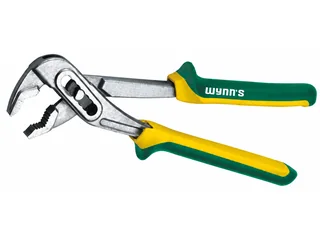 |
W0475A | คีมจับท่อ ด้ามหุ้มหนาWater Pump Pliers | 250mm | 8/48 | SK-55 |
| WNS506E | คีมปากขยายSlip Joint Pliers ทุกเบอร์ในตระกูลนี้หน้าตาเหมือนกัน ต่างที่ขนาด — ดูขนาดจริงที่คอลัมน์ขนาด |
150mm | 20/160 | SK-55 | |
| WNS508E | 200mm | 12/72 | SK-55 | ||
| WNS508D | คีมปากขยาย ชุบนิกเกิลSlip Joint Pliers Nickel Alloy Plated | 200mm | 12/72 | C-ALLOY | |
| W0039 | คีมล็อคแผ่นโลหะ (คีมล็อคปากเป็ด)Lock-Grip Pliers | SM250mm | 50 | เหล็กอัลลอย | |
| W0028 | คีมล็อคตัวซี (มีแผ่นรองหน้าสัมผัส)C-Clamp Locking Pliers ทุกเบอร์ในตระกูลนี้หน้าตาเหมือนกัน ต่างที่ขนาด — ดูขนาดจริงที่คอลัมน์ขนาด |
C450mm | 6/24 | เหล็กอัลลอย | |
| W0029 | C275mm | 10/40 | เหล็กอัลลอย | ||
| W0033 | คีมล็อคตัวซีC-Clamp Locking Pliers | C275mm | 10/40 | เหล็กอัลลอย | |
| W0042 | คีมล็อคปากแหลมLock-Grip Pliers ทุกเบอร์ในตระกูลนี้หน้าตาเหมือนกัน ต่างที่ขนาด — ดูขนาดจริงที่คอลัมน์ขนาด |
CD225mm | 10/60 | เหล็กอัลลอย | |
| W0043 | CD160mm | 12/72 | เหล็กอัลลอย | ||
| W0041 | คีมล็อคงานเชื่อมLock-Grip Pliers | W250mm | 50 | เหล็กอัลลอย | |
| WSB10 | คีมล็อคปากโค้งLock-Grip Pliers ทุกเบอร์ในตระกูลนี้หน้าตาเหมือนกัน ต่างที่ขนาด — ดูขนาดจริงที่คอลัมน์ขนาด |
CR250mm | 10/60 | เหล็กอัลลอย | |
| WSB607 | CR175mm | 10/60 | เหล็กอัลลอย | ||
| W0125 | คีมล็อคปากโค้ง ด้ามหุ้มยางLock-Grip Pliers | CR250mm | 10/60 | เหล็กอัลลอย | |
| W0127 | คีมล็อคโซ่Chain Lock Pliers | L450mm | 6/36 | โซ่เหล็ก Manganese #45 | |
| W0130 | คีมล็อคคู่มินิ 5 นิ้วLock-Grip Pliers | WR125mm / CD125mm | 12/144 | เหล็กอัลลอย | |
| W0037 | คีมล็อคปากตรงLock-Grip Pliers | R250mm | 10/60 | เหล็กอัลลอยชนิดพิเศษ | |
| 88-10 | คีมล็อคปากตรงอย่างดี (บรรจุแบบแผง)Lock-Grip Pliers ปากคีม Chromium Vanadium HRC50 · ตัวคีมเหล็กคาร์บอน A3 HRC40 |
10 นิ้ว | CR-V |
กดที่รหัสสินค้าในตาราง ระบบจะเปิด LINE พร้อมข้อความให้แล้ว หรือทักมาบอกรายการที่ต้องการก็ได้ ทีมงานเช็คสต็อกและแจ้งราคาส่งให้